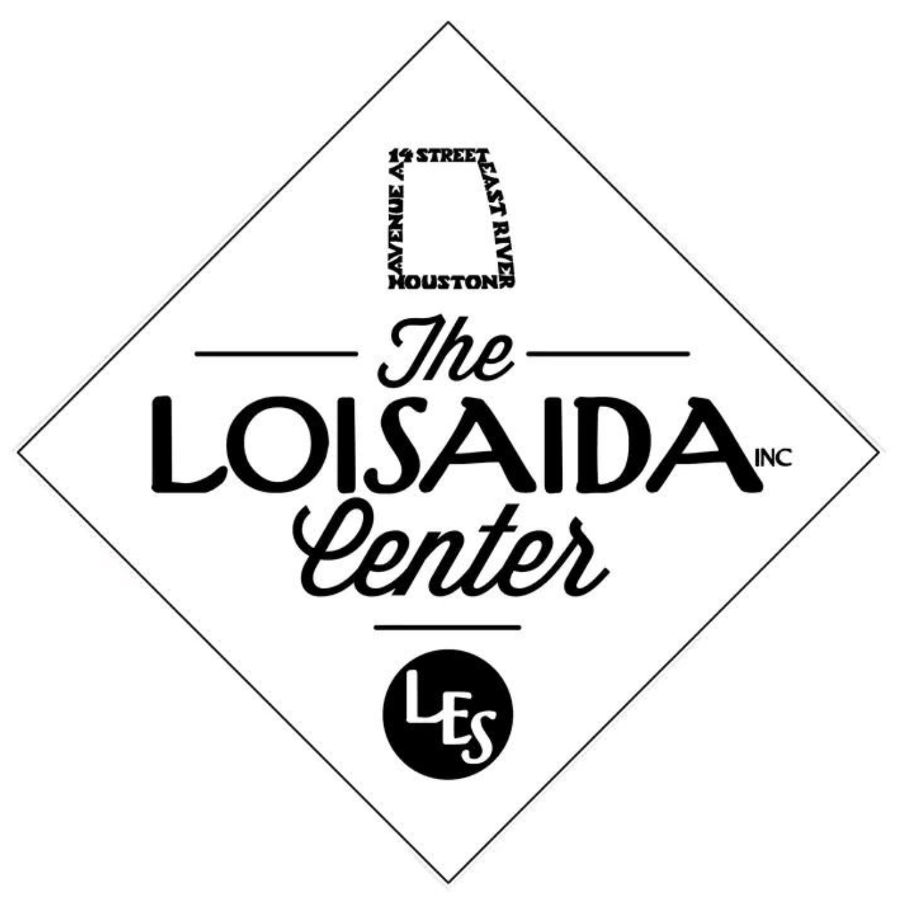

Designed a laser-cut acrylic enclosure for an air quality sensing system integrating an air quality sensor, CYD, RF antenna, and an LiPo battery and charging port. The enclosure was developed to house sensing electronics while providing protection from potential electromagnetic interference between components by creating internal walls to hold and seal off components.
Designed a 3D-printable hinged jig to aid in manufacturability by holding internal walls up before supports are added, significantly accelerating the assembly process.
Responsibilities included CAD modeling, design iteration, fabrication planning, and evaluation of tradeoffs between sensor accessibility, cable routing and component heating, and manufacturability.
A significant portion of my work focused on wing membrane tensioning and assembly procedures. Through repeated manufacturing cycles, I identified challenges related to achieving consistent membrane tension and investigated opportunities for tooling and process improvements to increase repeatability and reduce assembly time.
This work provided experience with lightweight structures, tolerance-sensitive assembly, fabrication methods, and the practical challenges of producing repeatable research hardware.